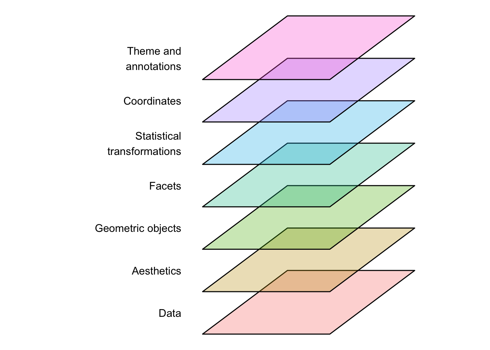
1 Data visualization
The most apparent purpose of data visualizations in scientific contexts is to convey information not suited for text or tables but for graphical displays like comparisons between categories, relationships among variables, or trends over time (Gelman, Pasarica, and Dodhia 2002; Tufte 2001). We often think of the scientific graph as the end product of our labor. However, data visualization can be an effective tool for thinking about scientific problems and performing exploratory data analysis before preparing your manuscript. These steps will likely take up more time than polishing Figure 1 of your upcoming paper.
Gelman, Andrew, Cristian Pasarica, and Rahul Dodhia. 2002. “Let’s Practice What We Preach.” The American Statistician 56 (2): 121–30. https://doi.org/10.1198/000313002317572790.
Data visualization is thus a skill, like writing, with several purposes. You may write notes for yourself and write to communicate with others. Notes come in many forms, just as messages you write to others. Similarly, data visualizations can have different purposes, such as
Checking that your data is what could be expected
Diagnosing statistical models
Exploring a relationship between many variables
Showing that your measurements are reliable and valid
Conveying the key message from your study
Traditionally, and in many software implementations, data visualization is a matter of choosing from a menu of charts such as box plots, scatter plots, or line graphs. These can be very effective. However, you would not restrict your writing to pre-made templates. As a professional scientist in a quantitative genre, you need a toolbox for data visualizations that do not limit you. By using a grammar of graphics you can be more creative in designing your visualizations.
1.1 A grammar of graphics - ggplot2
Building on Wilkinsons The Grammar of Graphics (Wilkinson and Wills 2005), Wickham (Wickham 2010, 2016) implemented a graphical grammar to R through the package ggplot2. The idea behind both Wickhams and Wilkinsons formalized syntax for creating data visualizations is to avoid special cases or duplicate methods and allow for creation of data visualizations based on a set of core components used in all graphics (Wickham 2010; Wilkinson and Wills 2005).
Wilkinson, Leland, and Graham Wills. 2005. The Grammar of Graphics. 2nd ed. Statistics and Computing. New York: Springer.
———. 2016. Ggplot2 : Elegant Graphics for Data Analysis. 2nd ed. Use r! Cham: Springer International Publishing : Imprint: Springer. https://doi.org/10.1007/978-3-319-24277-4.
The grammar (in the version described by Wickham (Wickham 2010)) has seven components that together creates a ggplot2 visualization (Figure 1.1).
The underlying data contains the variables that are mapped to aesthetics such as coordinates, colors or shapes. Each aesthetic can be controlled through scales by assigning values to coordinates, colors, shapes etc. Geometric objects creates the visual representations of the mapping. Sometimes small multiples of the same graph are created using facets which creates subdivision of the data to be plotted in different panels. Statistical transformations creates summaries of the data, however, in its simplest form, the transformation is the identity transformation. All graphical representations are plotted in a coordinate system. Theme and annotations adds non-data layers to the plot which can include geometric shapes or text (Figure 1.1).
1.1.1 Building blocks of a plot
Using a similar example as in (Wickham 2010) a basic plot can be broken down into the data (see Table 1.1), geometric objects, scales and coordinates and annotations. These components, that can be individually manipulated, together creates the final plot (see Figure 1.2 a-d).
Wickham, Hadley. 2010. “A Layered Grammar of Graphics.” Journal of Computational and Graphical Statistics 19 (1): 3–28. https://doi.org/10.1198/jcgs.2009.07098.
| x | y | shape |
|---|---|---|
| 1.0 | 3.0 | a |
| 2.4 | 2.0 | a |
| 4.0 | 5.0 | b |
| 5.2 | 7.8 | b |

The corresponding code to create this plot is fairly straight forward:
library(ggplot2)
1df <- data.frame(x = c(1, 2.4, 4, 5.2),
y = c(3, 2, 5, 7.8),
shape = c("a", "a", "b", "b"))
2 ggplot(data = df,
3 mapping = aes(x = x, y = y, shape = shape)) +
4 geom_point(color = "black", size = 3) +
5 labs(title = "Title",
subtitle = "Subtitle",
x = "x-axis",
y = "y-axis",
shape = "legend") +
6 theme_classic()- 1
- A simple data frame is saved containing the variables we will plot
- 2
- The data is explicitly called
- 3
- Variables are mapped to coordinates (x and y) and shapes.
- 4
- Geometric objects (points) are specified with color and size determined in the function
- 5
-
Annotations are added to the plot through the
labs(labels) function. - 6
- A pre-built theme is used to change the default appearance of the plot.
1.2 Before plotting
As we saw above, a basic visualization can be created from a data set, or a data frame which is the most common representation of data in R. A tidy data set has one observation per row and one variable per column. A tidy data set makes data visualization easy. However, not all data sets are friendly. In fact, some might be unfriendly because they are unhappy1.
1 The reference to happiness is a reference to Wickham (2014) wherein Tolstoy’s Anna Karenina is quoted; “Happy families are all alike; every unhappy family is unhappy in its own way.” The Anna Karenina principle applies to data as non-tidy data can be non-tidy in many ways, tidy data however are tidy because they all share a common set of features.
———. 2014. “Tidy Data.” Journal of Statistical Software; Vol 1, Issue 10 (2014), September. https://www.jstatsoft.org/v059/i10 http://dx.doi.org/10.18637/jss.v059.i10.
A lot of effort goes into making data sets suitable for visualization or statistical modelling. The good news is that R is especially suited for the process of importing and wrangling data. As with other common tasks in R there are numerous ways of achieving the same goals. This is a good thing because it allows for solutions to a wide range of problems. It is also a bad thing because it makes it difficult to getting started. A collection of R packages called the Tidyverse makes the process of getting started with data wrangling easier.
Tidyverse can be thought of as a dialect of the R language. The dialect is designed to make it easy to write sequential operations in a way that translates thoughts and ideas to code. Sequential operations are enabled by a pipe operator. Using a pipe operator we can call functions in sequential order to do specific operations on the data. We can write such a pipe as demonstrated below with the corresponding English language descriptions to the left.
Take the data then do
filter the data based on x larger than 10 then do
add a new calculated variable z = x + y then do
show the output
data |>
filter(x > 10) |>
mutate(z = x + y) |>
print()The pipe operator (|>) takes any input and place it as the first argument in the following function2. This is the mechanism that makes sequential operations possible. A pipe operator makes code more readable, consider the following two alternatives:
2 A function is a basic building block of your R code. Function are designed for specific tasks and can be part of packages or created by the user. A function may take arguments such as fun(<ARGUMENT1> = <default input>, <ARGUMNET2> = <default input>). Arguments can be used without explicitly naming them by putting expected input in at the right position. Orders of argument may be changed is argument names are used.
1print(mutate(filter(select(data, var1:var3), var1 == "xxx"), var4 = var1 + var2))
2data |>
select(var1:var3) |>
filter(var1 == "xxx") |>
mutate(var4 = var1 + var2) - 1
- Alternative 1: A number of operations are performed on data, we have to read from in to out to see each step.
- 2
- Alternative 2: The same steps are performed as in alternative 1, in the same order.
The pipe in alternative 2 are structured with the pipe operator making the code more readable and easier to edit. Notice that the same functions are used in both cases.
In R there are two main pipe operators. We have the “base R” pipe, |>. This pipe operator is included in the base installation of R and available without loading any packages on start up. A second pipe belongs to the magritter package. The magritter pipe (%>%) has the same basic functionality as the base pipe; the left hand input is inserted as the first argument in any right hand function.
Sometimes you might want to place your input somewhere else than as the first argument in a right hand function. A placeholder can be used to indicate where you would like to place your input. The base pipe differs from the magritter pipe in what symbol indicates a placeholder. In the example below, the function some_fun() expects data as the third argument. We need to use our placeholder to put the data in the correct position:
1data |>
some_fun(arg1 = c(1, 2),
arg2 = "some.setting",
arg3 = _)
library(tidyverse)
2data %>%
some_fun(arg1 = c(1, 2),
arg2 = "some.setting",
arg3 = .)- 1
- With the base R forward pipe operator.
- 2
-
With the
magritterforward pipe operator.
1.2.1 Reading data into R
Three packages makes reading tabular data into R easy. readr provides functions for reading and writing delimiter separated files, such as .csv or .tsv. readxl provides functions that imports data from excel files. An finally, googlesheets4 makes it possible to read tabular data created in google sheets.
Data can also be loaded from packages in R since storing data is a convenient way of sharing. By including data in a package you are nudged to do some quality checks and document it. We will talk more about data packages in a later workshop.
1.2.2 The verbs of data wrangling
Once data is available in our workspace we will be able to wrangle it. In the examples below I will use a data set containing results from dual x-ray absorptiometry measurements available in the exscidata package. To install the exscidata package:
library(remotes)
install_github("dhammarstrom/exscidata")The dplyrpackage provides a collection of verbs to facilitate wrangling. As mentioned above, “pipeable” functions takes a data frame as its first argument. This means that we can line up functions in sequential order using a pipe operator. In all verb functions, following the data argument follows a set of arguments that specifies what we wish to do with the data. The result of the operations performed by the function are returned as a data frame.
dplyr contains the following main data verbs:
selectrenamerelocatemutatefilterarrangesummarize
In addition, several helper function will aid our wrangling endeavors.
dplyr is loaded as part of the tidyverse package:
library(tidyverse)1.2.2.1 Select, rename and relocate variables
Variables in a data frame may be selected and renamed. Such operation may have multiple purposes such as giving you a better overview of the data of interest or limiting what data to display in a table. Renaming can make life easier if the data set contains long variable names.
Below we will store a subset of the data in a new data set. But we will first have a look at what column names are available:
- 1
-
Loading the
exscidatapackage - 2
-
Using
glimbsewe will get a overview of all available variables in the data set. The double::means that we are looking for the data setdxadatainside the packageexscidata.
Rows: 80
Columns: 59
$ participant <chr> "FP28", "FP40", "FP21", "FP34", "FP23", "FP26", "FP36…
$ time <chr> "pre", "pre", "pre", "pre", "pre", "pre", "pre", "pre…
$ multiple <chr> "L", "R", "R", "R", "R", "R", "L", "R", "R", "L", "L"…
$ single <chr> "R", "L", "L", "L", "L", "L", "R", "L", "L", "R", "R"…
$ sex <chr> "female", "female", "male", "female", "male", "female…
$ include <chr> "incl", "incl", "incl", "incl", "incl", "excl", "incl…
$ age <dbl> 24.5, 22.1, 26.8, 23.1, 24.8, 24.2, 20.5, 20.6, 37.4,…
$ height <dbl> 170.0, 175.0, 184.0, 164.0, 176.5, 163.0, 158.0, 181.…
$ weight <dbl> 66.5, 64.0, 85.0, 53.0, 68.5, 56.0, 60.5, 83.5, 65.0,…
$ BMD.head <dbl> 2.477, 1.916, 2.306, 2.163, 2.108, 2.866, 1.849, 2.21…
$ BMD.arms <dbl> 0.952, 0.815, 0.980, 0.876, 0.917, 0.973, 0.871, 0.91…
$ BMD.legs <dbl> 1.430, 1.218, 1.598, 1.256, 1.402, 1.488, 1.372, 1.42…
$ BMD.body <dbl> 1.044, 0.860, 1.060, 0.842, 0.925, 0.984, 0.923, 1.01…
$ BMD.ribs <dbl> 0.770, 0.630, 0.765, 0.636, 0.721, 0.737, 0.648, 0.70…
$ BMD.pelvis <dbl> 1.252, 1.078, 1.314, 1.044, 1.154, 1.221, 1.194, 1.32…
$ BMD.spine <dbl> 1.316, 0.979, 1.293, 0.899, 1.047, 1.089, 1.006, 1.14…
$ BMD.whole <dbl> 1.268, 1.082, 1.325, 1.119, 1.181, 1.350, 1.166, 1.24…
$ fat.left_arm <dbl> 1168, 715, 871, 610, 788, 372, 932, 1312, 388, 668, 5…
$ fat.left_leg <dbl> 4469, 4696, 3467, 3023, 3088, 2100, 4674, 5435, 1873,…
$ fat.left_body <dbl> 6280, 4061, 7740, 3638, 6018, 2328, 4896, 9352, 2921,…
$ fat.left_whole <dbl> 12365, 9846, 12518, 7565, 10259, 5048, 10736, 16499, …
$ fat.right_arm <dbl> 1205, 769, 871, 610, 741, 374, 940, 1292, 413, 716, 5…
$ fat.right_leg <dbl> 4497, 4900, 3444, 3017, 3254, 2082, 4756, 5455, 1782,…
$ fat.right_body <dbl> 6082, 3923, 8172, 3602, 5699, 2144, 4705, 8674, 2640,…
$ fat.right_whole <dbl> 12102, 9862, 12856, 7479, 10020, 4821, 10806, 15876, …
$ fat.arms <dbl> 2373, 1484, 1742, 1220, 1529, 747, 1872, 2604, 802, 1…
$ fat.legs <dbl> 8965, 9596, 6911, 6040, 6342, 4182, 9430, 10890, 3655…
$ fat.body <dbl> 12362, 7984, 15912, 7239, 11717, 4472, 9601, 18026, 5…
$ fat.android <dbl> 1880, 963, 2460, 1203, 1933, 527, 1663, 3183, 1240, 1…
$ fat.gynoid <dbl> 5064, 5032, 4779, 3739, 4087, 2740, 5217, 6278, 2309,…
$ fat.whole <dbl> 24467, 19708, 25374, 15044, 20278, 9869, 21542, 32375…
$ lean.left_arm <dbl> 1987, 1931, 2884, 1753, 2652, 2425, 1913, 2266, 3066,…
$ lean.left_leg <dbl> 7059, 7190, 10281, 6014, 8242, 7903, 6829, 8889, 9664…
$ lean.left_body <dbl> 9516, 10693, 13847, 9736, 11387, 10573, 8954, 11482, …
$ lean.left_whole <dbl> 20305, 21778, 29332, 19143, 24185, 22946, 18809, 2431…
$ lean.right_arm <dbl> 2049, 2081, 2888, 1754, 2487, 2439, 1930, 2236, 3253,…
$ lean.right_leg <dbl> 7104, 7506, 10200, 6009, 8685, 7841, 6950, 8923, 9198…
$ lean.right_body <dbl> 9199, 10304, 14593, 9636, 10779, 9733, 8602, 10672, 1…
$ lean.right_whole <dbl> 19605, 21310, 29643, 18792, 23653, 21837, 19407, 2372…
$ lean.arms <dbl> 4036, 4012, 5773, 3508, 5139, 4864, 3843, 4501, 6319,…
$ lean.legs <dbl> 14163, 14696, 20482, 12023, 16928, 15744, 13779, 1781…
$ lean.body <dbl> 18715, 20998, 28440, 19372, 22166, 20306, 17556, 2215…
$ lean.android <dbl> 2669, 2782, 3810, 2455, 2904, 2656, 2297, 3094, 3344,…
$ lean.gynoid <dbl> 6219, 7209, 10233, 5866, 7525, 5970, 5825, 8175, 7760…
$ lean.whole <dbl> 39910, 43088, 58976, 37934, 47837, 44783, 38216, 4804…
$ BMC.left_arm <dbl> 181, 138, 204, 144, 180, 173, 140, 173, 220, 226, 225…
$ BMC.left_leg <dbl> 567, 508, 728, 441, 562, 574, 482, 631, 633, 630, 672…
$ BMC.left_body <dbl> 622, 414, 696, 367, 526, 465, 370, 629, 473, 629, 509…
$ BMC.left_whole <dbl> 1680, 1321, 1945, 1201, 1527, 1580, 1131, 1688, 1544,…
$ BMC.right_arm <dbl> 198, 150, 210, 142, 176, 183, 140, 176, 224, 251, 226…
$ BMC.right_leg <dbl> 574, 514, 739, 431, 552, 565, 491, 641, 622, 636, 690…
$ BMC.right_body <dbl> 592, 428, 730, 351, 502, 409, 358, 582, 420, 616, 483…
$ BMC.right_whole <dbl> 1582, 1288, 1958, 1130, 1451, 1466, 1229, 1668, 1478,…
$ BMC.arms <dbl> 379, 288, 414, 285, 356, 357, 280, 348, 444, 478, 451…
$ BMC.legs <dbl> 1142, 1022, 1467, 872, 1115, 1139, 974, 1272, 1255, 1…
$ BMC.body <dbl> 1214, 842, 1426, 718, 1028, 874, 728, 1211, 893, 1245…
$ BMC.android <dbl> 80, 57, 90, 44, 56, 54, 43, 77, 52, 72, 59, 60, 65, 5…
$ BMC.gynoid <dbl> 314, 285, 427, 245, 299, 262, 241, 379, 335, 378, 332…
$ BMC.whole <dbl> 3261, 2609, 3903, 2331, 2978, 3046, 2360, 3356, 3022,…The data set contains 80 rows and 59 columns. The variables in the data set are described as part of the exscidata package and can be seen by typing ?dxadata in the console.
We will work further with lean body mass data, these are variables starting with lean.. In addition we need variables describing observations like participant, time, multiple, single, sex, include, height and weight. To select these variables we can try a couple of different approaches. The select function can select variables by name. This means that we can simply list them:
- 1
-
Retrieve the data from the
exscidatapackage - 2
- select variables based on names
- 3
- Print the resulting data frame.
# A tibble: 80 × 4
participant time multiple single
<chr> <chr> <chr> <chr>
1 FP28 pre L R
2 FP40 pre R L
3 FP21 pre R L
4 FP34 pre R L
5 FP23 pre R L
6 FP26 pre R L
7 FP36 pre L R
8 FP38 pre R L
9 FP25 pre R L
10 FP19 pre L R
# ℹ 70 more rowsThe above approach means a lot of work writing all columns names in the select call. An alternative approach is to select variables based on the first and last variable in a sequence. This is possible by using the syntax <first column>:<last column>.
exscidata::dxadata |>
1 select(participant:weight) |>
print() - 1
- Selecting by the first and last column in a sequence.
# A tibble: 80 × 9
participant time multiple single sex include age height weight
<chr> <chr> <chr> <chr> <chr> <chr> <dbl> <dbl> <dbl>
1 FP28 pre L R female incl 24.5 170 66.5
2 FP40 pre R L female incl 22.1 175 64
3 FP21 pre R L male incl 26.8 184 85
4 FP34 pre R L female incl 23.1 164 53
5 FP23 pre R L male incl 24.8 176. 68.5
6 FP26 pre R L female excl 24.2 163 56
7 FP36 pre L R female incl 20.5 158 60.5
8 FP38 pre R L female incl 20.6 181 83.5
9 FP25 pre R L male incl 37.4 183 65
10 FP19 pre L R male incl 22.3 178. 73.5
# ℹ 70 more rowsWe also like to have the lean body mass data included in our new data set. Since all variables containing lean body mass data starts with lean. we can use a helper function to select them. Two alternatives are possible:
exscidata::dxadata |>
1 select(participant:weight, starts_with("lean.")) |>
print()
exscidata::dxadata |>
2 select(participant:weight, contains("lean.")) |>
print() - 1
-
Using
starts_withto select all columns that starts withlean. - 2
-
Using
containsto select all variables that containslean.
# A tibble: 80 × 23
participant time multiple single sex include age height weight
<chr> <chr> <chr> <chr> <chr> <chr> <dbl> <dbl> <dbl>
1 FP28 pre L R female incl 24.5 170 66.5
2 FP40 pre R L female incl 22.1 175 64
3 FP21 pre R L male incl 26.8 184 85
4 FP34 pre R L female incl 23.1 164 53
5 FP23 pre R L male incl 24.8 176. 68.5
6 FP26 pre R L female excl 24.2 163 56
7 FP36 pre L R female incl 20.5 158 60.5
8 FP38 pre R L female incl 20.6 181 83.5
9 FP25 pre R L male incl 37.4 183 65
10 FP19 pre L R male incl 22.3 178. 73.5
# ℹ 70 more rows
# ℹ 14 more variables: lean.left_arm <dbl>, lean.left_leg <dbl>,
# lean.left_body <dbl>, lean.left_whole <dbl>, lean.right_arm <dbl>,
# lean.right_leg <dbl>, lean.right_body <dbl>, lean.right_whole <dbl>,
# lean.arms <dbl>, lean.legs <dbl>, lean.body <dbl>, lean.android <dbl>,
# lean.gynoid <dbl>, lean.whole <dbl>
# A tibble: 80 × 23
participant time multiple single sex include age height weight
<chr> <chr> <chr> <chr> <chr> <chr> <dbl> <dbl> <dbl>
1 FP28 pre L R female incl 24.5 170 66.5
2 FP40 pre R L female incl 22.1 175 64
3 FP21 pre R L male incl 26.8 184 85
4 FP34 pre R L female incl 23.1 164 53
5 FP23 pre R L male incl 24.8 176. 68.5
6 FP26 pre R L female excl 24.2 163 56
7 FP36 pre L R female incl 20.5 158 60.5
8 FP38 pre R L female incl 20.6 181 83.5
9 FP25 pre R L male incl 37.4 183 65
10 FP19 pre L R male incl 22.3 178. 73.5
# ℹ 70 more rows
# ℹ 14 more variables: lean.left_arm <dbl>, lean.left_leg <dbl>,
# lean.left_body <dbl>, lean.left_whole <dbl>, lean.right_arm <dbl>,
# lean.right_leg <dbl>, lean.right_body <dbl>, lean.right_whole <dbl>,
# lean.arms <dbl>, lean.legs <dbl>, lean.body <dbl>, lean.android <dbl>,
# lean.gynoid <dbl>, lean.whole <dbl>There are other select helper functions such as ends_with and matches that work in a similar fashion as the above. all_of and any_of helps you select variables based on a vector of variables, where selects based on where a function of your choosing returns true. See ?select for a complete list.
In a select call we can also rename variables using the syntax <new name> = <old name>. Let’s say we want to select and rename participant:
exscidata::dxadata |>
select(parti = participant, time:weight, starts_with("lean.")) |>
print() # A tibble: 80 × 23
parti time multiple single sex include age height weight lean.left_arm
<chr> <chr> <chr> <chr> <chr> <chr> <dbl> <dbl> <dbl> <dbl>
1 FP28 pre L R female incl 24.5 170 66.5 1987
2 FP40 pre R L female incl 22.1 175 64 1931
3 FP21 pre R L male incl 26.8 184 85 2884
4 FP34 pre R L female incl 23.1 164 53 1753
5 FP23 pre R L male incl 24.8 176. 68.5 2652
6 FP26 pre R L female excl 24.2 163 56 2425
7 FP36 pre L R female incl 20.5 158 60.5 1913
8 FP38 pre R L female incl 20.6 181 83.5 2266
9 FP25 pre R L male incl 37.4 183 65 3066
10 FP19 pre L R male incl 22.3 178. 73.5 3760
# ℹ 70 more rows
# ℹ 13 more variables: lean.left_leg <dbl>, lean.left_body <dbl>,
# lean.left_whole <dbl>, lean.right_arm <dbl>, lean.right_leg <dbl>,
# lean.right_body <dbl>, lean.right_whole <dbl>, lean.arms <dbl>,
# lean.legs <dbl>, lean.body <dbl>, lean.android <dbl>, lean.gynoid <dbl>,
# lean.whole <dbl>Notice how different ways of selecting variables can be combined in select.
The rename function makes it easy to rename variables without the need to select.
exscidata::dxadata |>
select(participant:weight, starts_with("lean.")) |>
rename(parti = participant) |>
print() # A tibble: 80 × 23
parti time multiple single sex include age height weight lean.left_arm
<chr> <chr> <chr> <chr> <chr> <chr> <dbl> <dbl> <dbl> <dbl>
1 FP28 pre L R female incl 24.5 170 66.5 1987
2 FP40 pre R L female incl 22.1 175 64 1931
3 FP21 pre R L male incl 26.8 184 85 2884
4 FP34 pre R L female incl 23.1 164 53 1753
5 FP23 pre R L male incl 24.8 176. 68.5 2652
6 FP26 pre R L female excl 24.2 163 56 2425
7 FP36 pre L R female incl 20.5 158 60.5 1913
8 FP38 pre R L female incl 20.6 181 83.5 2266
9 FP25 pre R L male incl 37.4 183 65 3066
10 FP19 pre L R male incl 22.3 178. 73.5 3760
# ℹ 70 more rows
# ℹ 13 more variables: lean.left_leg <dbl>, lean.left_body <dbl>,
# lean.left_whole <dbl>, lean.right_arm <dbl>, lean.right_leg <dbl>,
# lean.right_body <dbl>, lean.right_whole <dbl>, lean.arms <dbl>,
# lean.legs <dbl>, lean.body <dbl>, lean.android <dbl>, lean.gynoid <dbl>,
# lean.whole <dbl>If we want to change the order of variables in a data set we can specify the order in a select call, or use relocate
exscidata::dxadata |>
select(participant:weight, starts_with("lean.")) |>
relocate(lean.whole) |>
print() # A tibble: 80 × 23
lean.whole participant time multiple single sex include age height
<dbl> <chr> <chr> <chr> <chr> <chr> <chr> <dbl> <dbl>
1 39910 FP28 pre L R female incl 24.5 170
2 43088 FP40 pre R L female incl 22.1 175
3 58976 FP21 pre R L male incl 26.8 184
4 37934 FP34 pre R L female incl 23.1 164
5 47837 FP23 pre R L male incl 24.8 176.
6 44783 FP26 pre R L female excl 24.2 163
7 38216 FP36 pre L R female incl 20.5 158
8 48045 FP38 pre R L female incl 20.6 181
9 54710 FP25 pre R L male incl 37.4 183
10 58740 FP19 pre L R male incl 22.3 178.
# ℹ 70 more rows
# ℹ 14 more variables: weight <dbl>, lean.left_arm <dbl>, lean.left_leg <dbl>,
# lean.left_body <dbl>, lean.left_whole <dbl>, lean.right_arm <dbl>,
# lean.right_leg <dbl>, lean.right_body <dbl>, lean.right_whole <dbl>,
# lean.arms <dbl>, lean.legs <dbl>, lean.body <dbl>, lean.android <dbl>,
# lean.gynoid <dbl>relocate puts the selected variable as the first column in the data set. If we want to specify the location we can use the arguments .before or .after.
exscidata::dxadata |>
select(participant:weight, starts_with("lean.")) |>
relocate(lean.whole, .after = sex) |>
print() # A tibble: 80 × 23
participant time multiple single sex lean.whole include age height
<chr> <chr> <chr> <chr> <chr> <dbl> <chr> <dbl> <dbl>
1 FP28 pre L R female 39910 incl 24.5 170
2 FP40 pre R L female 43088 incl 22.1 175
3 FP21 pre R L male 58976 incl 26.8 184
4 FP34 pre R L female 37934 incl 23.1 164
5 FP23 pre R L male 47837 incl 24.8 176.
6 FP26 pre R L female 44783 excl 24.2 163
7 FP36 pre L R female 38216 incl 20.5 158
8 FP38 pre R L female 48045 incl 20.6 181
9 FP25 pre R L male 54710 incl 37.4 183
10 FP19 pre L R male 58740 incl 22.3 178.
# ℹ 70 more rows
# ℹ 14 more variables: weight <dbl>, lean.left_arm <dbl>, lean.left_leg <dbl>,
# lean.left_body <dbl>, lean.left_whole <dbl>, lean.right_arm <dbl>,
# lean.right_leg <dbl>, lean.right_body <dbl>, lean.right_whole <dbl>,
# lean.arms <dbl>, lean.legs <dbl>, lean.body <dbl>, lean.android <dbl>,
# lean.gynoid <dbl>1.2.2.2 Creating new variables
mutate let’s us create new variables in a data set. These can be a function of variables already in the data set or created from our input.
Let’s create a variable representing the percentage of lean mass to body mass.
exscidata::dxadata |>
select(participant:weight, starts_with("lean.")) |>
mutate(rel_lean_whole = 100 * ((lean.whole/1000) / weight)) |>
relocate(rel_lean_whole) |>
print() # A tibble: 80 × 24
rel_lean_whole participant time multiple single sex include age height
<dbl> <chr> <chr> <chr> <chr> <chr> <chr> <dbl> <dbl>
1 60.0 FP28 pre L R female incl 24.5 170
2 67.3 FP40 pre R L female incl 22.1 175
3 69.4 FP21 pre R L male incl 26.8 184
4 71.6 FP34 pre R L female incl 23.1 164
5 69.8 FP23 pre R L male incl 24.8 176.
6 80.0 FP26 pre R L female excl 24.2 163
7 63.2 FP36 pre L R female incl 20.5 158
8 57.5 FP38 pre R L female incl 20.6 181
9 84.2 FP25 pre R L male incl 37.4 183
10 79.9 FP19 pre L R male incl 22.3 178.
# ℹ 70 more rows
# ℹ 15 more variables: weight <dbl>, lean.left_arm <dbl>, lean.left_leg <dbl>,
# lean.left_body <dbl>, lean.left_whole <dbl>, lean.right_arm <dbl>,
# lean.right_leg <dbl>, lean.right_body <dbl>, lean.right_whole <dbl>,
# lean.arms <dbl>, lean.legs <dbl>, lean.body <dbl>, lean.android <dbl>,
# lean.gynoid <dbl>, lean.whole <dbl>1.2.3 From wide to long and back again
The dxadata data set is not a tidy data set. It contains two variables (single and multiple) that indicates which leg has been training with low and moderate volume respectively (Hammarström et al. 2020). Additionally, lean mass variables could be separated based on body half (right or left). To compare training volume we need to reformat the data set. We will start by making a smaller data set that indicate training volume per leg.
As we have already seen, participant, single and multiple are the variables needed to make a data set that indicates training volume per leg, per participant. We will start by selecting these columns followed by pivoting the data as the volume data is located in two variables. This essentially means that we will make the data set longer.
exscidata::dxadata |>
1 select(participant, multiple, single) |>
2 pivot_longer(values_to = "leg", names_to = "volume", cols = multiple:single) %>%
print()- 1
- Selecting our variables of interest
- 2
- Creating a long data set based on volume data spread over two columns.
# A tibble: 160 × 3
participant volume leg
<chr> <chr> <chr>
1 FP28 multiple L
2 FP28 single R
3 FP40 multiple R
4 FP40 single L
5 FP21 multiple R
6 FP21 single L
7 FP34 multiple R
8 FP34 single L
9 FP23 multiple R
10 FP23 single L
# ℹ 150 more rowsAs we see we now have a long data set, but it is longer than expected. The original data contains only 41 participants. As each participant has two legs we would expect 82 observations. Above we did not remove post-intervention observations and we therefore have several duplicates. This can be taken care of by using the distinct function which returns unique observations across a combination of variables.
participant_volume <- exscidata::dxadata |>
select(participant, multiple, single) |> #
pivot_longer(values_to = "leg", names_to = "volume", cols = multiple:single) %>%
1 distinct(participant, volume, leg) %>%
print()- 1
-
Removes all duplicate combinations of
participant,volumeandleg.
# A tibble: 82 × 3
participant volume leg
<chr> <chr> <chr>
1 FP28 multiple L
2 FP28 single R
3 FP40 multiple R
4 FP40 single L
5 FP21 multiple R
6 FP21 single L
7 FP34 multiple R
8 FP34 single L
9 FP23 multiple R
10 FP23 single L
# ℹ 72 more rowsWe can save our smaller data set as participant_volume
Next we want to create a data set of right and left leg lean mass data. We will start by selecting variables.
exscidata::dxadata |>
select(participant, time, starts_with("lean.") & ends_with("_leg")) |> #
print()# A tibble: 80 × 4
participant time lean.left_leg lean.right_leg
<chr> <chr> <dbl> <dbl>
1 FP28 pre 7059 7104
2 FP40 pre 7190 7506
3 FP21 pre 10281 10200
4 FP34 pre 6014 6009
5 FP23 pre 8242 8685
6 FP26 pre 7903 7841
7 FP36 pre 6829 6950
8 FP38 pre 8889 8923
9 FP25 pre 9664 9198
10 FP19 pre 9704 9806
# ℹ 70 more rowsNotice how & was used to create a conditional selection of variables. I addition to selecting time, include3 and participant we select variables that starts with lean. AND ends with _leg.
3 The variable incl is used to indicate which participants to include in a final analysis. Included participants completed a given set of training sessions.
The resulting data set is wide. Two variables contains the same variable (lean mass), but one variable (leg) is lurking in two variables (lean.left_leg and lean.right_leg). Let’s make the data set long.
3leg_leanmass <- exscidata::dxadata |>
select(participant, time, include, starts_with("lean.") & ends_with("_leg")) |>
1 pivot_longer(names_to = "leg", values_to = "lean_mass", cols = contains("lean.")) |>
2 mutate(leg = if_else(leg == "lean.left_leg", "L", "R")) |>
print()- 1
- Notice how select helpers can be used in pivot_longer.
- 2
-
We use
mutatetogether withif_elseto change the leg indicator toRandL - 3
-
We save the data set as
leg_leanmass
# A tibble: 160 × 5
participant time include leg lean_mass
<chr> <chr> <chr> <chr> <dbl>
1 FP28 pre incl L 7059
2 FP28 pre incl R 7104
3 FP40 pre incl L 7190
4 FP40 pre incl R 7506
5 FP21 pre incl L 10281
6 FP21 pre incl R 10200
7 FP34 pre incl L 6014
8 FP34 pre incl R 6009
9 FP23 pre incl L 8242
10 FP23 pre incl R 8685
# ℹ 150 more rowspivot_longer has a brother called pivot_wider, this functions performs the reverse operation making long data sets wide. Let’s say that we would like to calculate the paired difference of leg lean mass from pre to post, we could make a wider data set and calculate post - pre
exscidata::dxadata |>
select(participant, time, include, starts_with("lean.") & ends_with("_leg")) |>
pivot_longer(names_to = "leg", values_to = "lean_mass", cols = contains("lean.")) |>
mutate(leg = if_else(leg == "lean.left_leg", "L", "R")) |>
1 pivot_wider(names_from = time, values_from = lean_mass) |>
2 mutate(delta_lean_mass = post - pre) |>
print()- 1
-
Pivot wider creates new columns based on names in
timeand values inlean_mass - 2
- The new variables is calculated as the difference between pre and post-intervention values.
# A tibble: 82 × 6
participant include leg pre post delta_lean_mass
<chr> <chr> <chr> <dbl> <dbl> <dbl>
1 FP28 incl L 7059 7273 214
2 FP28 incl R 7104 7227 123
3 FP40 incl L 7190 7192 2
4 FP40 incl R 7506 7437 -69
5 FP21 incl L 10281 10470 189
6 FP21 incl R 10200 10819 619
7 FP34 incl L 6014 6326 312
8 FP34 incl R 6009 6405 396
9 FP23 incl L 8242 8687 445
10 FP23 incl R 8685 8480 -205
# ℹ 72 more rows1.2.4 Joining data sets
We have constructed two smaller data sets, one indicating which leg performed low and moderate volume and one data set containing the lean mass values for each leg, pre- and post-intervention. Next step is to join the two.
dplyr contains functions for joining data frames. There are, as illustrated in Figure 1.3 important differences between the functions where outer joins (left, right and full) keeps all observations in x, y and both x and y respectively. inner_join however, drops unmatched observations from both input data frames. Unlike the others, anti_join function removes observations in x that is present in y.
Code producing the figure
library(ggVennDiagram)
library(ggplot2)
library(cowplot)
# Joins can be illustrated with venn diagrams.
# We do not need information about sets etc only
# a way to fill three distinct areas.
# The ggVennDiagram contains a function creating
# shapes to be filled.
lst <- process_data(Venn(list(x = c("1"), y = c("1"))))
# To avoid repeated code, create a function that plots
# venn diagrams with options to indicate a title and
# specify fill colors
join_illustration <- function(lst,
fills = c("steelblue",
"steelblue",
"white"),
title = "left_join(x,y)") {
ggplot() +
geom_sf(aes(fill = id), data = venn_region(lst),
color = "black") +
theme_void() +
# Hard coded labels
geom_text(aes(x = c(300, 700),
y = c(500, 500),
label = c("x", "y")),
size = 8,
color = "gray20") +
scale_fill_manual(values = fills) +
labs(title = title) +
theme(legend.position = "none")
}
# Each join gets its own fig. All figures are
# ombined below with plot_grid from cowplot.
left <- join_illustration(lst = lst,
title = "left_join(x,y)",
fills = c("steelblue", "steelblue", "white"))
right <- join_illustration(lst = lst,
title = "right_join(x,y)",
fills = c("white", "steelblue", "steelblue"))
inner <- join_illustration(lst = lst,
title = "inner_join(x,y)",
fills = c("white", "steelblue", "white"))
full <- join_illustration(lst = lst,
title = "full_join(x,y)",
fills = c("steelblue", "steelblue", "steelblue"))
anti <- join_illustration(lst = lst,
title = "anti_join(x,y)",
fills = c("steelblue", "white", "white"))
plot_grid(left, right, inner, full, anti, ncol = 2)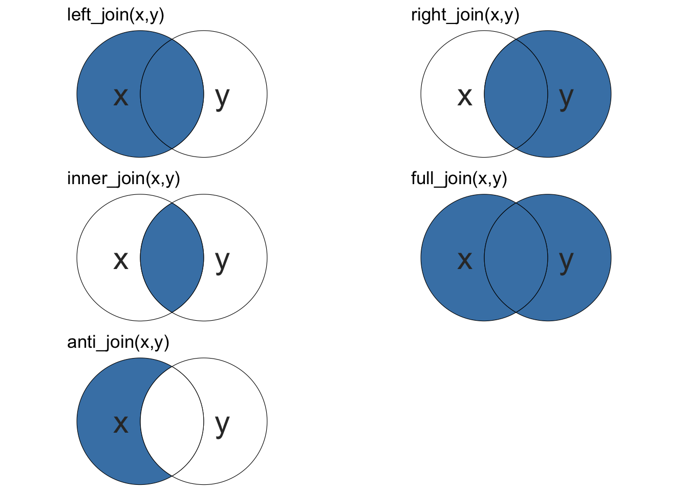
Our two data sets are pretty insensitive to dropped observations since the two data sets should be complete. We will use a left_join to put the data set together. This will match participant and leg because these two variables exists in both data sets. If we want to join by other variables we may specify such a variable. We’ll save the joined data set as leg_leanmass.
leg_leanmass <- leg_leanmass |>
inner_join(participant_volume) |>
print()Joining with `by = join_by(participant, leg)`# A tibble: 160 × 6
participant time include leg lean_mass volume
<chr> <chr> <chr> <chr> <dbl> <chr>
1 FP28 pre incl L 7059 multiple
2 FP28 pre incl R 7104 single
3 FP40 pre incl L 7190 single
4 FP40 pre incl R 7506 multiple
5 FP21 pre incl L 10281 single
6 FP21 pre incl R 10200 multiple
7 FP34 pre incl L 6014 single
8 FP34 pre incl R 6009 multiple
9 FP23 pre incl L 8242 single
10 FP23 pre incl R 8685 multiple
# ℹ 150 more rows1.2.5 Filters and sorting rows
We included the variable include in our data set, this will make it possible to get rid of observations from participants that should be part of the final analysis. We can use filter to perform this operation.
leg_leanmass |>
filter(include == "incl") |>
print()# A tibble: 136 × 6
participant time include leg lean_mass volume
<chr> <chr> <chr> <chr> <dbl> <chr>
1 FP28 pre incl L 7059 multiple
2 FP28 pre incl R 7104 single
3 FP40 pre incl L 7190 single
4 FP40 pre incl R 7506 multiple
5 FP21 pre incl L 10281 single
6 FP21 pre incl R 10200 multiple
7 FP34 pre incl L 6014 single
8 FP34 pre incl R 6009 multiple
9 FP23 pre incl L 8242 single
10 FP23 pre incl R 8685 multiple
# ℹ 126 more rowsThe double equal sign can be read as “equal to” in R, a common source of confusion is that the single equal sign (=) is used as a assignment operator.4
4 An assignment operator is used to assign data values to objects stored in the work space. The commonly used <- is equivalent to =. Note however that -> is different from =.
The filter function keeps rows of a data frame where a condition that we specify returns TRUE. To construct testable conditions that allows for results being either FALSE or TRUE we will use one, or a combination operators, such as
== |
→ “equal to” |
!= |
→ “not equal to” |
> |
→ “larger than” |
< |
→ “smaller than” |
>=, <= |
→ “larger/smaller or equal to” |
! |
→ “NOT” |
& |
→ “AND” |
| |
→ “OR” |
The above are all part of a collection of logical operators.5 We may demonstrate the mechanism by which filter operates by creating our own vector of TRUE/FALSE values. In the code chunk below a vector (INCLUDE) is created based on our include variable. A logical vector is created from the statement INCLUDE != "excl". We then use this vector in the filter statement.
5 See here for a technical overview of logical operators.
INCLUDE <- leg_leanmass |>
pull(include)
INCLUDE <- INCLUDE != "excl"
INCLUDE [1] TRUE TRUE TRUE TRUE TRUE TRUE TRUE TRUE TRUE TRUE FALSE FALSE
[13] TRUE TRUE TRUE TRUE TRUE TRUE TRUE TRUE TRUE TRUE TRUE TRUE
[25] TRUE TRUE TRUE TRUE TRUE TRUE TRUE TRUE TRUE TRUE TRUE TRUE
[37] TRUE TRUE TRUE TRUE FALSE FALSE TRUE TRUE TRUE TRUE FALSE FALSE
[49] FALSE FALSE FALSE FALSE TRUE TRUE TRUE TRUE TRUE TRUE TRUE TRUE
[61] TRUE TRUE TRUE TRUE TRUE TRUE FALSE FALSE TRUE TRUE TRUE TRUE
[73] TRUE TRUE FALSE FALSE TRUE TRUE TRUE TRUE TRUE TRUE TRUE TRUE
[85] TRUE TRUE TRUE TRUE TRUE TRUE TRUE TRUE TRUE TRUE TRUE TRUE
[97] TRUE TRUE TRUE TRUE TRUE TRUE TRUE TRUE TRUE TRUE TRUE TRUE
[109] TRUE TRUE TRUE TRUE TRUE TRUE TRUE TRUE FALSE FALSE TRUE TRUE
[121] TRUE TRUE TRUE TRUE TRUE TRUE TRUE TRUE TRUE TRUE TRUE TRUE
[133] TRUE TRUE TRUE TRUE TRUE TRUE TRUE TRUE TRUE TRUE TRUE TRUE
[145] TRUE TRUE FALSE FALSE TRUE TRUE FALSE FALSE TRUE TRUE TRUE TRUE
[157] FALSE FALSE FALSE FALSEleg_leanmass |>
filter(INCLUDE)# A tibble: 136 × 6
participant time include leg lean_mass volume
<chr> <chr> <chr> <chr> <dbl> <chr>
1 FP28 pre incl L 7059 multiple
2 FP28 pre incl R 7104 single
3 FP40 pre incl L 7190 single
4 FP40 pre incl R 7506 multiple
5 FP21 pre incl L 10281 single
6 FP21 pre incl R 10200 multiple
7 FP34 pre incl L 6014 single
8 FP34 pre incl R 6009 multiple
9 FP23 pre incl L 8242 single
10 FP23 pre incl R 8685 multiple
# ℹ 126 more rowsIn R, a vector of TRUE/FALSE (or in short form T/F) are is a special case which R will prohibit us from overwriting.
1.2.5.1 Grouped filters
Using the dplyr syntax it is easy to e.g. filter or mutate based on a grouping of the data set. The function group_by creates a grouped data set. In the context of filtering in our data set we may want to filter out observations larger than the median from two time points.
leg_leanmass |>
group_by(time) |>
filter(lean_mass > median(lean_mass)) |>
print()# A tibble: 80 × 6
# Groups: time [2]
participant time include leg lean_mass volume
<chr> <chr> <chr> <chr> <dbl> <chr>
1 FP21 pre incl L 10281 single
2 FP21 pre incl R 10200 multiple
3 FP23 pre incl R 8685 multiple
4 FP38 pre incl L 8889 single
5 FP38 pre incl R 8923 multiple
6 FP25 pre incl L 9664 single
7 FP25 pre incl R 9198 multiple
8 FP19 pre incl L 9704 multiple
9 FP19 pre incl R 9806 single
10 FP13 pre incl L 10086 multiple
# ℹ 70 more rowsThe above operation removed exactly half of the observations, as expected since we wanted observations larger than the median from both time points. We may combine this statement with filtering away "excl" from the include variable.
leg_leanmass |>
group_by(time) |>
filter(include != "excl", lean_mass > median(lean_mass)) |>
print()# A tibble: 68 × 6
# Groups: time [2]
participant time include leg lean_mass volume
<chr> <chr> <chr> <chr> <dbl> <chr>
1 FP21 pre incl L 10281 single
2 FP21 pre incl R 10200 multiple
3 FP23 pre incl R 8685 multiple
4 FP38 pre incl L 8889 single
5 FP38 pre incl R 8923 multiple
6 FP25 pre incl L 9664 single
7 FP25 pre incl R 9198 multiple
8 FP19 pre incl L 9704 multiple
9 FP19 pre incl R 9806 single
10 FP13 pre incl L 10086 multiple
# ℹ 58 more rowsPutting two conditions in a filter call is like explicitly using & (AND) to combine statements. All conditions must evaluate to be TRUE for the row to be included in final output.
An alternative to grouping by the group_by function is to do a “per-operation grouping”6 using the .by argument. This does not leave a grouping in the data frame after filtering.
6 See ?dplyr_by
leg_leanmass |>
filter(include != "excl", lean_mass > median(lean_mass), .by = time) |>
print()# A tibble: 68 × 6
participant time include leg lean_mass volume
<chr> <chr> <chr> <chr> <dbl> <chr>
1 FP21 pre incl L 10281 single
2 FP21 pre incl R 10200 multiple
3 FP23 pre incl R 8685 multiple
4 FP38 pre incl L 8889 single
5 FP38 pre incl R 8923 multiple
6 FP25 pre incl L 9664 single
7 FP25 pre incl R 9198 multiple
8 FP19 pre incl L 9704 multiple
9 FP19 pre incl R 9806 single
10 FP13 pre incl L 10086 multiple
# ℹ 58 more rows1.2.6 Summaries
We often want to reduce larger amount of data into some summaries, such as means, standard deviations, medians etc. These summaries may be calculated over any number of categorical variables representing e.g. groups of observations. Just like in the filtering statement above, we may work with a grouped data frame, or by using a per-operation grouping (.by).
We will calculate the median, first and third quartile, and minimum and maximum from each volume condition and time point. Below are both of the two alternatives of grouping used.
leg_leanmass |>
filter(include != "excl") |>
group_by(time, volume) |>
summarise(Min = min(lean_mass),
q25 = quantile(lean_mass, 0.25),
Median = median(lean_mass),
q75 = quantile(lean_mass, 0.75),
Max = max(lean_mass)) |>
print()`summarise()` has grouped output by 'time'. You can override using the
`.groups` argument.# A tibble: 4 × 7
# Groups: time [2]
time volume Min q25 Median q75 Max
<chr> <chr> <dbl> <dbl> <dbl> <dbl> <dbl>
1 post multiple 5343 7309. 8654. 10820. 13948
2 post single 5561 7201. 8772. 10453. 13526
3 pre multiple 5500 7010. 8590. 10104 13166
4 pre single 5289 7126. 8654 10125. 13166leanmass_sum <- leg_leanmass |>
filter(include != "excl") |>
summarise(Min = min(lean_mass),
q25 = quantile(lean_mass, 0.25),
Median = median(lean_mass),
q75 = quantile(lean_mass, 0.75),
Max = max(lean_mass),
.by = c(time, volume)) |>
print()# A tibble: 4 × 7
time volume Min q25 Median q75 Max
<chr> <chr> <dbl> <dbl> <dbl> <dbl> <dbl>
1 pre multiple 5500 7010. 8590. 10104 13166
2 pre single 5289 7126. 8654 10125. 13166
3 post multiple 5343 7309. 8654. 10820. 13948
4 post single 5561 7201. 8772. 10453. 13526Notice how the data frames either have a persistent grouping, or no grouping depending on how we invoked grouping. Notice also that all values are nicely displayed, this is not always the case with summarise.
Consider the following example
vals <- c(4.5, 6.7, 4.6, 5.1, NA)
mean(vals)[1] NAThe mean of a vector of values containing a missing value returns NA. If we where to have missing values (NA) in our original data we would have recievied a NA in results. To drop an NA from such a summary we need to specify na.rm = TRUE as part of a summary function.
vals <- c(4.5, 6.7, 4.6, 5.1, NA)
mean(vals, na.rm = TRUE)[1] 5.225R does not drop NA silently! This is a good thing as we want to get a notice when we are missing data. If we know we are missing data we need to explicitly type this in our calls. This “rule” is not always true as some functions silently drops NA, be aware!
1.2.7 Arranging data frames
At last we might want to arrange a data frame for ease of use, or prior to making a table etc. Arranging does not change the data frame per se, only how it is displayed.
We’ll used our summarized data frame from above and sort based on the volume variable.
leanmass_sum |>
arrange(volume) |>
print()# A tibble: 4 × 7
time volume Min q25 Median q75 Max
<chr> <chr> <dbl> <dbl> <dbl> <dbl> <dbl>
1 pre multiple 5500 7010. 8590. 10104 13166
2 post multiple 5343 7309. 8654. 10820. 13948
3 pre single 5289 7126. 8654 10125. 13166
4 post single 5561 7201. 8772. 10453. 13526Any other column will also work for arranging
leanmass_sum |>
arrange(Median) |>
print()# A tibble: 4 × 7
time volume Min q25 Median q75 Max
<chr> <chr> <dbl> <dbl> <dbl> <dbl> <dbl>
1 pre multiple 5500 7010. 8590. 10104 13166
2 post multiple 5343 7309. 8654. 10820. 13948
3 pre single 5289 7126. 8654 10125. 13166
4 post single 5561 7201. 8772. 10453. 13526Using a helper function (desc) reverses the sorting
leanmass_sum |>
arrange(desc(Median)) |>
print()# A tibble: 4 × 7
time volume Min q25 Median q75 Max
<chr> <chr> <dbl> <dbl> <dbl> <dbl> <dbl>
1 post single 5561 7201. 8772. 10453. 13526
2 pre single 5289 7126. 8654 10125. 13166
3 post multiple 5343 7309. 8654. 10820. 13948
4 pre multiple 5500 7010. 8590. 10104 13166Notice that desc also works for character data
leanmass_sum |>
arrange(desc(volume)) |>
print()# A tibble: 4 × 7
time volume Min q25 Median q75 Max
<chr> <chr> <dbl> <dbl> <dbl> <dbl> <dbl>
1 pre single 5289 7126. 8654 10125. 13166
2 post single 5561 7201. 8772. 10453. 13526
3 pre multiple 5500 7010. 8590. 10104 13166
4 post multiple 5343 7309. 8654. 10820. 139481.3 ggplot examples
As hinted above, ggplot2 presents us with almost endless opportunities for graphical representations of our data. We will use the data we have wrangled above to better understand the ggplot2 syntax.
In our summary of the lean mass data we have calculated a number of summary statistics that can be used to create a type of range-quartile-median plot not unlike the plots suggested by Tukey7. We will use time as a categorical variable on the x-axis and our summary statistics displayed on the y-axis.
7 Tukey (1977) is considered to be creator of the box-plot. However, Spear may have suggested a predecessor to the box-plot in Charting statistics (Spear 1952).
Tukey, John Wilder. 1977. Exploratory Data Analysis. Addison-Wesley Series in Behavioral Science. Reading, Mass: Addison-Wesley Pub. Co.
Spear, M. E. 1952. Charting Statistics. McGraw-Hill. https://books.google.no/books?id=1vBOAAAAMAAJ.
ggplot(data = leanmass_sum, aes(time, Median))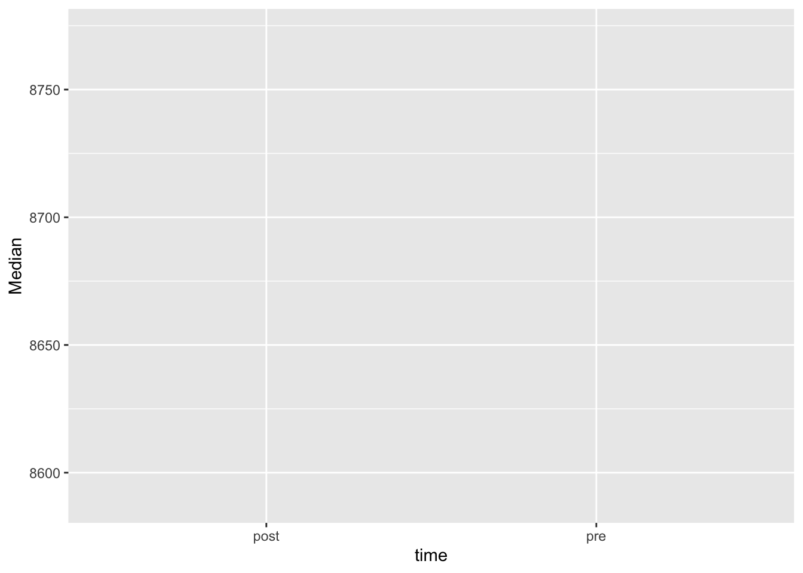
We have specified a data set, and variables for the x and y axis. This specification gives us an empty coordinate system. We need to add geometric objects to represent the data mapped to x and y coordinates. Let’s start simple
ggplot(data = leanmass_sum, aes(time, Median)) +
geom_point()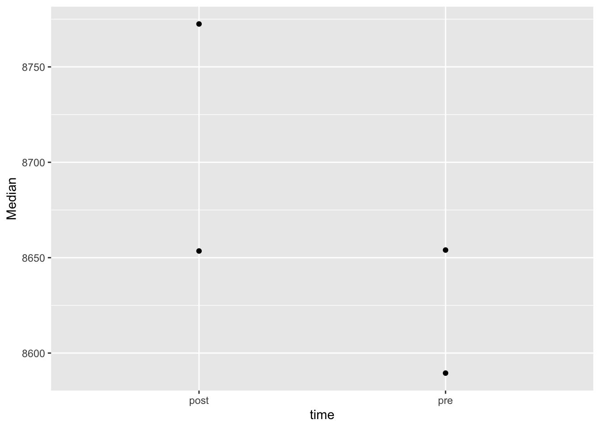
The points now represents our median values per time point. There are a number of geometric objects, or geoms in ggplot2. You are also able to extend ggplot2 by creating your own geoms, this has been done in many packages to make a specific geometric available. In ggplot2 there are about 50 geoms available and in addition, a number of statistical transformations8.
8 See https://ggplot2.tidyverse.org/reference/ for a complete inventory.
In our plot in the making, instead of points we may add rectangular shapes with a bit of reorganization of the data.
leanmass_sum |>
mutate(Time = if_else(time == "pre", 1, 2)) |>
ggplot( aes(Time, Median, fill = volume)) +
geom_rect(aes(xmin = Time - 0.18,
xmax = Time + 0.18,
ymin = Median,
ymax = q75),
color = "black",
position = position_dodge(width = 0.4)) +
geom_rect(aes(xmin = Time - 0.18,
xmax = Time + 0.18,
ymin = q25,
ymax = Median),
color = "black",
position = position_dodge(width = 0.4))We have hacked our way to a plot showing the median as a line inside a box covering the interquartile range. Let’s add bars representing the minimum and maximum values. Note that we are using layers and we want our range bars to not over plot the boxes. We must therefore add them prior to the boxes. We will also scale the x-axis and add labels.
leanmass_sum |>
mutate(Time = if_else(time == "pre", 1, 2)) |>
ggplot( aes(Time, Median, fill = volume)) +
geom_errorbar(aes(ymin = Min, ymax = Max),
position = position_dodge(width = 0.4),
width = 0) +
geom_rect(aes(xmin = Time - 0.18,
xmax = Time + 0.18,
ymin = Median,
ymax = q75),
color = "black",
position = position_dodge(width = 0.4)) +
geom_rect(aes(xmin = Time - 0.18,
xmax = Time + 0.18,
ymin = q25,
ymax = Median),
color = "black",
position = position_dodge(width = 0.4)) +
scale_x_continuous(limits = c(0.75, 2.25),
breaks = c(1, 2),
labels = c("pre", "post"))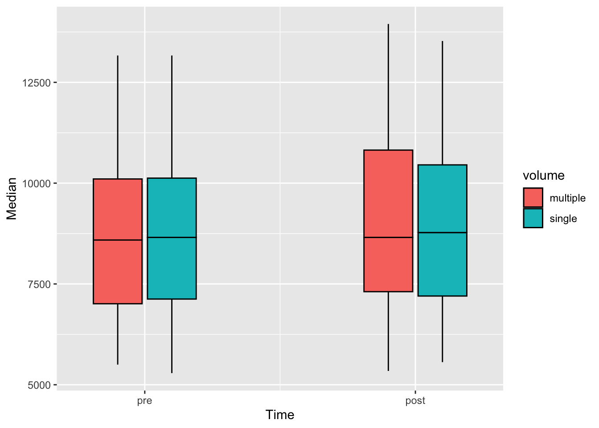
Do not bother creating the above figure! This is an example of the flexibility brought to us by using a set of simple geometric objects. There are shortcuts to the above plot that takes care of a couple of default operations. We need our data prior to being summarized with additional preparatory steps:
leg_leanmass |>
filter(include != "excl") |>
mutate(time = factor(time, levels = c("pre", "post"))) |>
ggplot(aes(time, lean_mass, fill = volume)) +
geom_boxplot()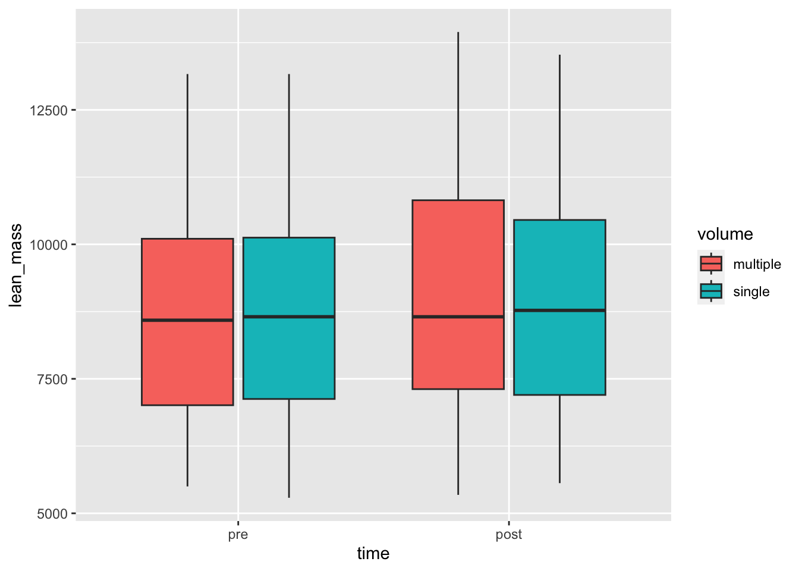
The new plot is a box-plot showing the same statistical transformations that we made by hand using a categorical x-axis with the time-values sorted as a factor.
Code producing the figure
a <- leanmass_sum |>
mutate(Time = if_else(time == "pre", 1, 2)) |>
ggplot( aes(Time, Median, fill = volume)) +
geom_errorbar(aes(ymin = Min, ymax = Max),
position = position_dodge(width = 0.4),
width = 0) +
geom_rect(aes(xmin = Time - 0.18,
xmax = Time + 0.18,
ymin = Median,
ymax = q75),
color = "black",
position = position_dodge(width = 0.4)) +
geom_rect(aes(xmin = Time - 0.18,
xmax = Time + 0.18,
ymin = q25,
ymax = Median),
color = "black",
position = position_dodge(width = 0.4)) +
scale_x_continuous(limits = c(0.75, 2.25),
breaks = c(1, 2),
labels = c("pre", "post")) +
theme(legend.position = "bottom")
b <- leg_leanmass |>
filter(include != "excl") |>
mutate(time = factor(time, levels = c("pre", "post"))) |>
ggplot(aes(time, lean_mass, fill = volume)) +
geom_boxplot() +
theme(legend.position = "bottom")
plot_grid(a, b, labels = c("a", "b"), ncol = 2)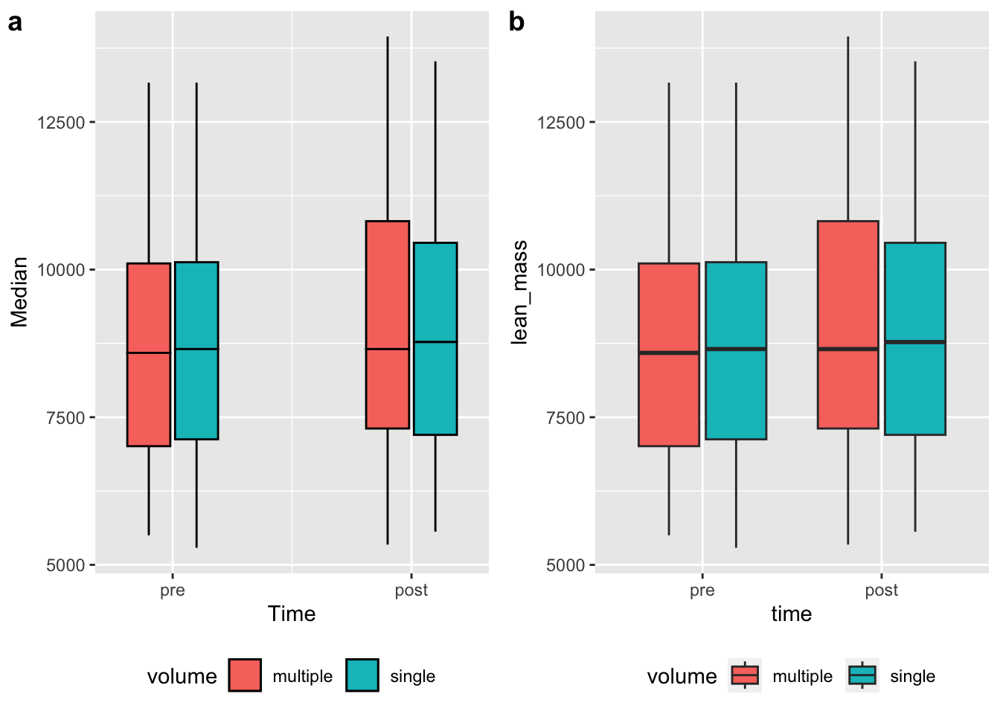
We have seen that ggplot2 have some built in features that makes statistical transformation, but also that a similar result can be obtained by using other “geoms” such as geom_rect. Again, this allows for flexible creation of data visualizations.
1.3.1 Labels and themes
So far we have used the available data to determine what is being represented in the figure. To make the figure closer to “publication ready” we would want to take control over labels, colors and shapes that so far are presented with variable names and default settings.
The labs function adds customized labels to a ggplot. All aesthetic mappings are available for labeling. We will go further with the box-plot which uses x, y and fill as aesthetics mapped to data.
leg_leanmass |>
filter(include != "excl") |>
mutate(time = factor(time, levels = c("pre", "post"))) |>
ggplot(aes(time, lean_mass, fill = volume)) +
geom_boxplot() +
labs(x = "Time",
y = "Leg lean mass (g)",
fill = "Volume condition")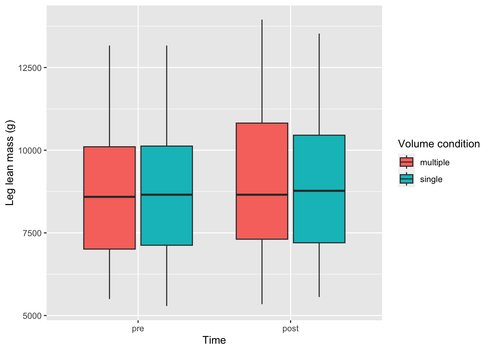
Additionally, we might want to think about if we need all axis labels. The time variable is specified with pre and post and won’t need a overall axis label. Instead we might want to clean up the axis text. Since this is a data-driven element in our figure we can change it’s behavior prior to plotting. We have already changed the order of the factor, let’s add labels to each level and remove the overall Time label.
leg_leanmass |>
filter(include != "excl") |>
mutate(time = factor(time,
levels = c("pre", "post"),
labels = c("Pre\nintervention",
"Post\nintervention"))) |>
ggplot(aes(time, lean_mass, fill = volume)) +
geom_boxplot() +
labs(x = "Time",
y = "Leg lean mass (g)",
fill = "Volume condition") +
theme(axis.title.x = element_blank())Notice that we removed the “Time” label from the figure by removing it in the theme function (theme(axis.title.x = element_blank()); more about that later). The factor variable time was re-specified using the factor function. This function takes a character or factor variable and specifies levels (the order of factors) and optionally, labels for each level.
An alternative approach to changing the labels of the factor is to include labels in a call to scale_x_discrete.
leg_leanmass |>
filter(include != "excl") |>
mutate(time = factor(time,
levels = c("pre", "post"))) |>
ggplot(aes(time, lean_mass, fill = volume)) +
geom_boxplot() +
labs(x = "Time",
y = "Leg lean mass (g)",
fill = "Volume condition") +
scale_x_discrete(labels = c("Pre\nintervention",
"Post\nintervention")) +
theme(axis.title.x = element_blank())
1.3.1.1 Theming
ggplot2 has a very flexible system for changing parts of a figure that are not directly connected to the data (i.e. created from aesthetic mapping). Each element in the theme that can be controlled is listed in the help pages for theme, type ?theme in your console to access it.
The below illustrates some of the main components we might want to consider:
leg_leanmass |>
filter(include != "excl") |>
mutate(time = factor(time,
levels = c("pre", "post"))) |>
ggplot(aes(time, lean_mass, fill = volume)) +
geom_boxplot() +
labs(x = "Time",
y = "Leg lean mass (g)",
fill = "Volume condition",
title = "The plot title",
subtitle = "The plot subtitle",
caption = "the plot caption") +
scale_x_discrete(labels = c("Pre\nintervention",
"Post\nintervention")) +
theme(axis.title.x = element_blank(),
legend.position = "top",
axis.title = element_text(color = "yellow"),
axis.text = element_text(color = "green"),
axis.ticks = element_line(color = "yellow", linewidth = 2),
axis.line = element_line(color = "blue", linewidth = 2),
panel.background = element_rect(fill = "gray50"),
panel.grid.major = element_line(color = "pink", linewidth = 2),
panel.grid.minor = element_line(color = "magenta", linewidth = 2),
plot.background = element_rect(fill = "darkblue"),
legend.background = element_rect(fill = "navyblue"),
legend.key = element_rect(fill = "gray"),
legend.text = element_text(color = "yellow"),
legend.title = element_text(color = "magenta"),
plot.caption = element_text(color = "yellow"),
plot.title = element_text(color = "lightgreen"),
plot.subtitle = element_text(color = "pink"))
Each element of the theme can be modified with an element function. The theme element axis.title is a text element and must subsequently be modified with element_text(). This function takes a number of arguments making it possible to modify text components. Below we use our basic plot and to modify the y axis title.
leg_leanmass |>
filter(include != "excl") |>
mutate(time = factor(time,
levels = c("pre", "post"))) |>
ggplot(aes(time, lean_mass, fill = volume)) +
geom_boxplot() +
labs(x = "Time",
y = "Leg lean\nmass (g)",
fill = "Volume condition",
title = "The plot title",
subtitle = "The plot subtitle",
caption = "the plot caption") +
scale_x_discrete(labels = c("Pre\nintervention",
"Post\nintervention")) +
theme(axis.title.x = element_blank(),
legend.position = "top",
axis.title.y = element_text(color = "black",
family = "mono",
face = "bold",
size = 20,
hjust = 0.5,
vjust = 0.5,
angle = 45,
lineheight = 2),
)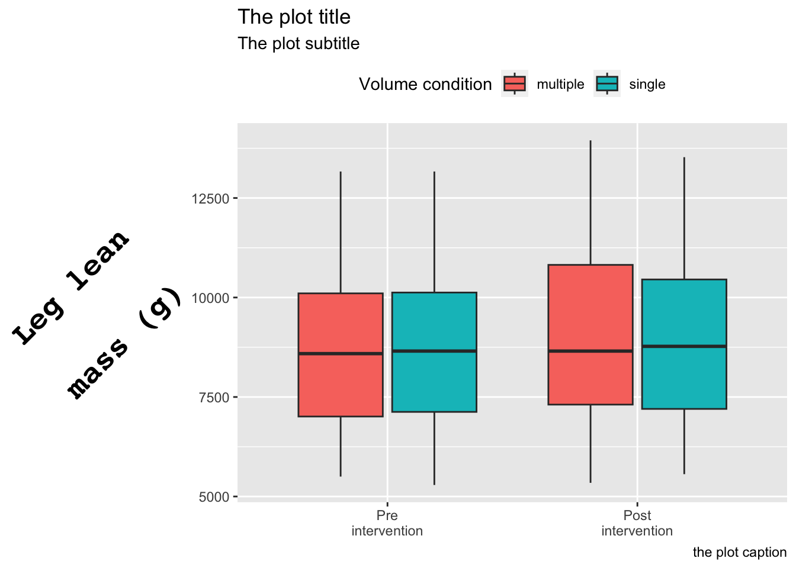
The element axis.title.y is similar to axis.title.x and if we want we could use axis.title to modify both for common attributes. Notice also that we have changed multiple numbers that have defaults. The size is the size of the text, hjust and vjust controls horizontal and vertical placement, receptively.angle rotates the text and lineheight controls the distance between lines (we have used \n to indicate a new line in the title).
Similarly to element_text, element_rect contains argument to control rectangular elements and element_line is used to control lines. element_blank is used to remove an element, we already used this above to remove the x axis title. In the same “family” of function we find margin which can specify margins of theme elements.
In addition to controlling specific elements of a theme we have the option to use ready made themes. A couple of pre-specified themes are shipped with ggplot2 (see Figure 1.4)
Code producing the figure
p <- leg_leanmass |>
filter(include != "excl") |>
mutate(time = factor(time,
levels = c("pre", "post"))) |>
ggplot(aes(time, lean_mass, fill = volume)) +
geom_boxplot() +
labs(x = "Time",
y = "Leg lean\nmass (g)",
fill = "Volume condition",
subtitle = "The plot subtitle",
caption = "the plot caption") +
scale_x_discrete(labels = c("Pre\nintervention",
"Post\nintervention"))
plot_grid(p + theme_bw() + labs(title = "theme_bw"),
p + theme_classic()+ labs(title = "theme_classic"),
p + theme_minimal()+ labs(title = "theme_minimal"),
p + theme_dark()+ labs(title = "theme_dark"),
p + theme_light()+ labs(title = "theme_light"),
p + theme_linedraw()+ labs(title = "theme_linedraw"),
p + theme_bw()+ labs(title = "theme_bw"),
p + theme_grey()+ labs(title = "theme_grey"),
p + theme_void()+ labs(title = "theme_void"),
ncol = 2)ggplot21.4 Scientific graphic design
An important rule of scientific graphics is, not to lie. Or as stated by Tufte (2001), “graphical excellence begins with telling the truth about the data”. Clear and honest representation of the data together with detailed labeling are key factors for avoiding lies (Tufte 2001).
Another key aspect in the construction of scientific graphs is to decide what to plot. Graphs are very good at showing differences, however, what differences should be show? In a two-group design (treatment vs. control) we should aim at showing the difference between groups, not the difference within groups (Ho et al. 2019). When data are grouped, or measurements repeated within experimental units (such as research participants), we should show aim at indicating this fact. When graphical summaries are shown, we should also aim at showing the underlying data(Tufte 2001).
1.4.1 Revise and edit
When trying to find a coherent guide for scientific graphics one quickly realize that guidelines are often in conflict with each other. We have to reach some pragmatic level of compromise in our work. How do we find this compromise? Tufte’s advice to constantly revise and edit is a good start (Tufte 2001). Like with writing we try to explain or show, but fail to do so. Multiple edits later our text is ready to communicate an idea to others, and we might have learned something too.
Tufte, Edward R. 2001. The Visual Display of Quantitative Information. 2. edition. Cheshire, Conn.: Graphics Press.
In practice a graph, or a collection of graphs are born from multiple revisions. Below we will revise our graph using a number of principles outlined by Tufte (Tufte 2001).
1.4.1.1 Show the data
Our original idea is shown below. We made a box-plot of raw lean mass values. A core shortcoming of this graph is that it hides uncertainty our sample size. We could add another layer on top of our bow-plots to show raw data. The geom geom_point is added with the additional arguments: shape = 21, position =position_jitterdodge(dodge.width = 0.75, jitter.width = 0.1). The change in shape creates the possibility to fill points. As we have specified fill in aesthetics each point will have a condition-wise fill.
Code producing the figure
leg_leanmass |>
filter(include != "excl") |>
mutate(time = factor(time,
levels = c("pre", "post"))) |>
ggplot(aes(time, lean_mass, fill = volume)) +
geom_boxplot() +
geom_point(shape = 21, position = position_jitterdodge(dodge.width = 0.75,
jitter.width = 0.1))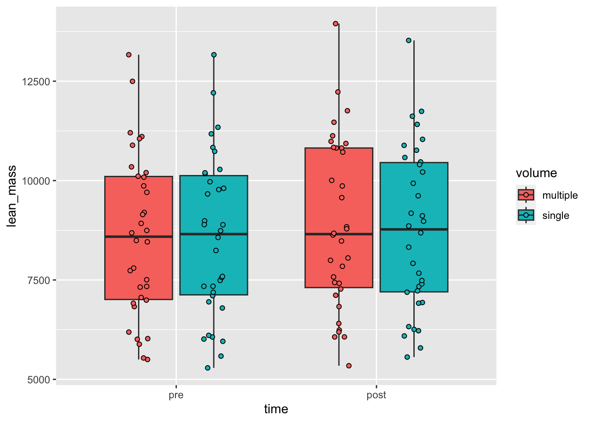
Are we showing the data now? Some aspects of the data are still lost. The fact that the experiment is a nested one is not obvious from this display. Could we connect related data points?
In the next graph we’ll try another alternative, using a line-graph we might be able to convey an aspect of the repeated measures design. We will also add a facet to show each volume condition.
Code producing the figure
leg_leanmass |>
filter(include != "excl") |>
mutate(time = factor(time,
levels = c("pre", "post"))) |>
ggplot(aes(time, lean_mass, fill = volume, group = participant)) +
geom_line() +
geom_point(shape = 21) +
facet_grid(. ~ volume)But what is the real comparison here? Here we might actually display within-condition differences. The analog to statistical test might be that we show two within-condition t-tests and tell the reader that the effect in one group is greater than the other. This is not an honest test.
To revise further we might want to compare changes across conditions. We can do this and still highlight comparisons within participants since each participant performed both conditions. To accomplish this we need some data wrangling.
delta_lean <- leg_leanmass |>
1 filter(include != "excl") |>
2 pivot_wider(names_from = time, values_from = lean_mass) |>
3 mutate(delta = post - pre) |>
print()- 1
- Using only included participants from our raw data set we first…
- 2
- create a wide data set by time allowing for…
- 3
- a simple difference across time in each participant and condition.
# A tibble: 68 × 7
participant include leg volume pre post delta
<chr> <chr> <chr> <chr> <dbl> <dbl> <dbl>
1 FP28 incl L multiple 7059 7273 214
2 FP28 incl R single 7104 7227 123
3 FP40 incl L single 7190 7192 2
4 FP40 incl R multiple 7506 7437 -69
5 FP21 incl L single 10281 10470 189
6 FP21 incl R multiple 10200 10819 619
7 FP34 incl L single 6014 6326 312
8 FP34 incl R multiple 6009 6405 396
9 FP23 incl L single 8242 8687 445
10 FP23 incl R multiple 8685 8480 -205
# ℹ 58 more rowsWe have saved the data set in a new object called delta_lean we will use this for plotting.
Code producing the figure
delta_lean |>
ggplot(aes(volume, delta, fill = volume, group = participant)) +
geom_line() +
geom_point(shape = 21)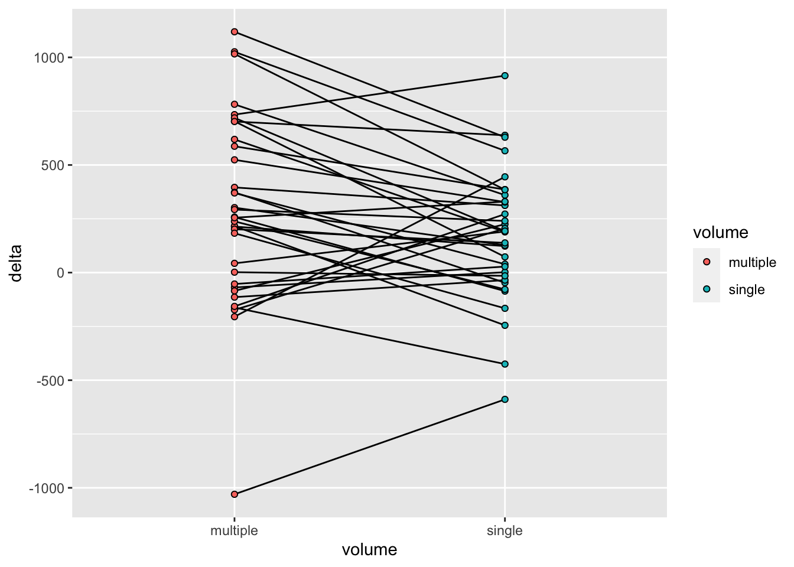
It could be argued that the order of the factor variable volume is not accurately representing the data. Multiple is larger than single and the graph might be more accurate in this respect if we change this variable. I will do it as a pre-plotting operation. We may then also change the labels.
Code producing the figure
delta_lean |>
mutate(volume = factor(volume, levels = c("single", "multiple"),
labels = c("Low-volume", "Moderate-volume"))) |>
ggplot(aes(volume, delta,
fill = volume,
group = participant)) +
geom_line() +
geom_point(shape = 21) 1.4.1.2 Maximize the data-ink ratio
A guiding principle in Tufte’ guideline is to remove non-data ink. We should aim to maximize the amount of ink used to display the data. Non-data ink can be removed by manipulating theme components. A great start might be to use a built in theme, theme_minimal.
Code producing the figure
delta_lean |>
mutate(volume = factor(volume, levels = c("single", "multiple"),
labels = c("Low-volume", "Moderate-volume"))) |>
ggplot(aes(volume, delta,
fill = volume,
group = participant)) +
geom_line() +
geom_point(shape = 21) +
theme_minimal()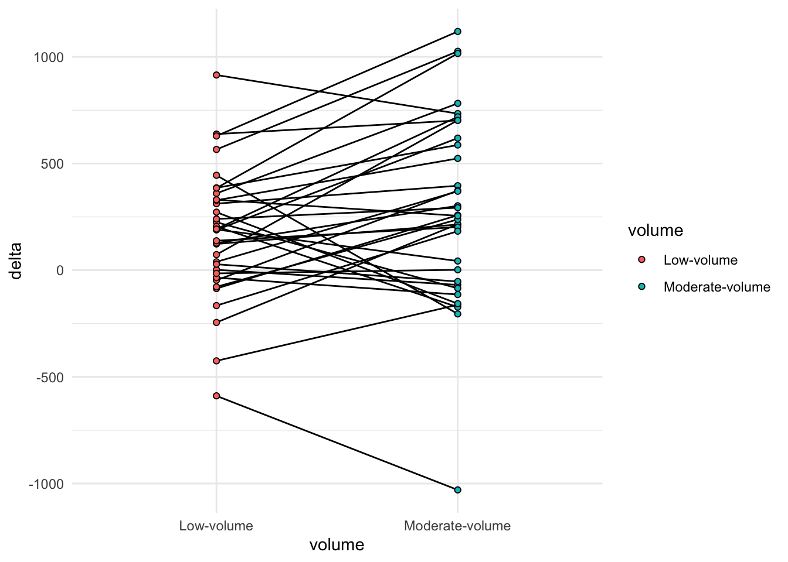
theme_minimal.The legend is redundant, it can be removed since this information is already present in the x axis. The x-axis title is redundant as the information is duplicated in the labels. Some grid lines can be removed without loss of information, maybe even all of them. Let’s add a line manually to show the 0 change. We can access these options using the theme function and elements manipulated therein. Placing the theme after theme_minimal in our call makes sure that we don’t bring back elements from the pre-built theme. Let’s also add a more descriptive label on the y-axis.
Code producing the figure
delta_lean |>
mutate(volume = factor(volume, levels = c("single", "multiple"),
labels = c("Low-volume", "Moderate-volume"))) |>
ggplot(aes(volume, delta,
fill = volume,
group = participant)) +
geom_hline(yintercept = 0, color = "gray90") +
geom_line() +
geom_point(shape = 21) +
labs(y = "Change in lean mass from pre- to post-intervention (g)") +
theme_minimal() +
theme(legend.position = "none",
axis.title.x = element_blank(),
panel.grid.major.x = element_blank(),
panel.grid.minor.y = element_blank(),
panel.grid.major.y = element_blank())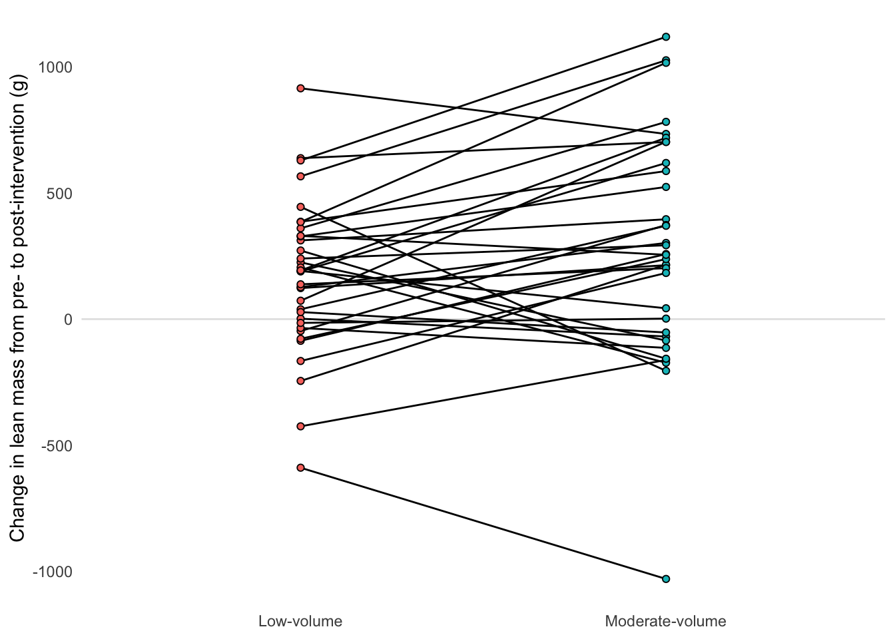
theme_minimal.1.4.1.3 Erase redundant data ink
We have used points to represent the start and end of each line. This might be a case of redundant data ink.
Code producing the figure
delta_lean |>
mutate(volume = factor(volume, levels = c("single", "multiple"),
labels = c("Low-volume", "Moderate-volume"))) |>
ggplot(aes(volume, delta,
fill = volume,
group = participant)) +
geom_hline(yintercept = 0, color = "gray90") +
geom_line() +
labs(y = "Change in lean mass from pre- to post-intervention (g)") +
theme_minimal() +
theme(legend.position = "none",
axis.title.x = element_blank(),
panel.grid.major.x = element_blank(),
panel.grid.minor.y = element_blank(),
panel.grid.major.y = element_blank())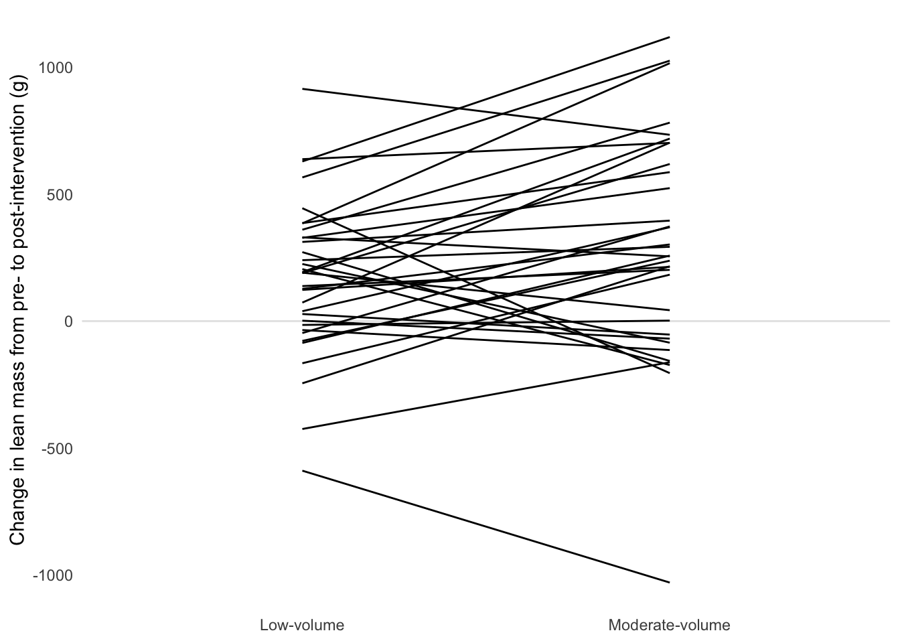
theme_minimal and removing redundant data ink by removing points.To make the graph even more light weight we could consider making lines a bit transparent. Using alpha = 0.5 we can add transparency to lines.
Code producing the figure
delta_lean |>
mutate(volume = factor(volume, levels = c("single", "multiple"),
labels = c("Low-volume", "Moderate-volume"))) |>
ggplot(aes(volume, delta,
fill = volume,
group = participant)) +
geom_hline(yintercept = 0, color = "gray90") +
geom_line(alpha = 0.5) +
labs(y = "Change in lean mass from pre- to post-intervention (g)") +
theme_minimal() +
theme(legend.position = "none",
axis.title.x = element_blank(),
panel.grid.major.x = element_blank(),
panel.grid.minor.y = element_blank(),
panel.grid.major.y = element_blank())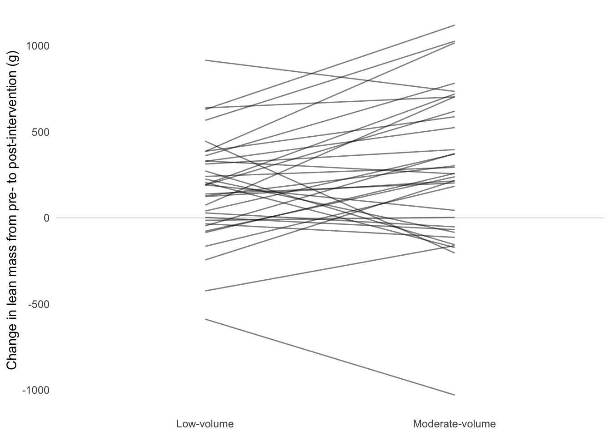
theme_minimal and removing redundant data ink by removing points and adding transparency.1.4.1.4 Making comparisons
We now have a graph that represents the data, could we aid interpreting the figure? Perhaps we could add some information showing average changes per condition? Below we will construct a data frame of averages for each condition and add it to the figure.
Code producing the figure
descriptives <- delta_lean |>
mutate(volume = factor(volume, levels = c("single", "multiple"),
labels = c("Low-volume", "Moderate-volume"))) |>
summarise(.by = volume,
m = mean(delta))
delta_lean |>
mutate(volume = factor(volume, levels = c("single", "multiple"),
labels = c("Low-volume", "Moderate-volume"))) |>
ggplot(aes(volume, delta,
fill = volume,
group = participant)) +
geom_hline(yintercept = 0, color = "gray90") +
1 geom_point(data = filter(descriptives, volume== "Low-volume"),
aes(volume, m, group = NULL, fill = NULL),
position = position_nudge(x = -0.1)) +
2 geom_point(data = filter(descriptives, volume== "Moderate-volume"),
aes(volume, m, group = NULL, fill = NULL),
position = position_nudge(x = 0.1)) +
geom_line(alpha = 0.5) +
labs(y = "Change in lean mass from pre- to post-intervention (g)") +
theme_minimal() +
theme(legend.position = "none",
axis.title.x = element_blank(),
panel.grid.major.x = element_blank(),
panel.grid.minor.y = element_blank(),
panel.grid.major.y = element_blank())- 1
- Two point layers are added to make it easy to plot points besides lines. Notice that the x-axis factor must be correctly formatted
- 2
- The other point layer, here position_nudge is positive.
theme_minimal and removing redundant data ink by removing points and adding transparency. Adding group averages with geom_point.Again, we might not be giving the reader of the graph the full story. Recently a new type of graph has been suggested to aid interpretation of two-group comparisons. In addition to means we could add the estimate of the difference between groups. These plots are called estimation plots (Ho et al. 2019). In our previous work we used different variations of ANCOVA models to adjust for baseline values (Hammarström et al. 2020) while modelling the change score. Let’s start by fitting the model. Since the design is a bit tricky we need to let the model know that observations are grouped by participant. We can use the same delta_lean data set to fit the model.
Ho, Joses, Tayfun Tumkaya, Sameer Aryal, Hyungwon Choi, and Adam Claridge-Chang. 2019. “Moving Beyond P Values: Data Analysis with Estimation Graphics.” Nature Methods 16 (7): 565–66. https://doi.org/10.1038/s41592-019-0470-3.
Hammarström, Daniel, Sjur Øfsteng, Lise Koll, Marita Hanestadhaugen, Ivana Hollan, William Apró, Jon Elling Whist, Eva Blomstrand, Bent R. Rønnestad, and Stian Ellefsen. 2020. “Benefits of higher resistance-training volume are related to ribosome biogenesis.” The Journal of physiology 598 (3): 543–65. https://doi.org/10.1113/JP278455.
library(lme4)
mod <- lmer(delta ~ scale(pre) + volume + (1|participant),
data = delta_lean)
1mod_results <- data.frame(cbind(coef(summary(mod)), confint(mod)[3:5, ]))- 1
- The output from the model is saved in a new object, including confidence intervals for each coefficient.
Our model gives us one coefficient of interest, volumesingle. This is the difference between multiple and single sets change in lean mass. This coefficient has an accompanying confidence interval that can be used for inference. Let’s add the difference between groups as an additional point to the plot together with a confidence interval and a second scale.
Code producing the figure
descriptives <- delta_lean |>
mutate(volume = factor(volume, levels = c("single", "multiple"),
labels = c("Low-volume", "Moderate-volume"))) |>
summarise(.by = volume,
m = mean(delta))
1
zero <- descriptives |>
filter(volume == "Low-volume") |>
pull(m)
2
est <- zero + (- mod_results[3,1])
ciu <- - mod_results[3,4] + zero
cil <- - mod_results[3,5] + zero
delta_lean |>
mutate(volume = factor(volume, levels = c("single", "multiple"),
labels = c("Low-volume", "Moderate-volume"))) |>
ggplot(aes(volume, delta,
group = participant)) +
geom_point(data = filter(descriptives, volume== "Low-volume"),
aes(volume, m, group = NULL, fill = NULL),
position = position_nudge(x = -0.1)) +
3
geom_segment(y = zero, yend = zero, x = 0.95, xend = 2.2, color = "gray50",
lty = 1) +
4
geom_errorbar(aes(y = est, ymin = cil,
ymax = ciu, x = 2.1),
width = 0, color = "gray50") +
geom_point(data = filter(descriptives, volume== "Moderate-volume"),
aes(volume, m, group = NULL, fill = NULL),
position = position_nudge(x = 0.1),
shape = 24,
size = 2,
fill = "gray60") +
geom_line(alpha = 0.5) +
labs(y = "Change in lean mass from pre- to post-intervention (g)") +
theme_minimal() +
theme(legend.position = "none",
axis.title.x = element_blank(),
panel.grid.major.x = element_blank(),
panel.grid.minor.y = element_blank(),
panel.grid.major.y = element_blank())- 1
- A “zero line” is created from the descriptive data in the low-volume group
- 2
- The confidence interval is “corrected” to the observed data as the model CI only shows the differences between groups. Notice that estimates are reversed in the model.
- 3
- A segment is added to represent the “zero line”, the mean in low-volume.
- 4
- An errorbar is used around the descriptive data for the moderate volume group.
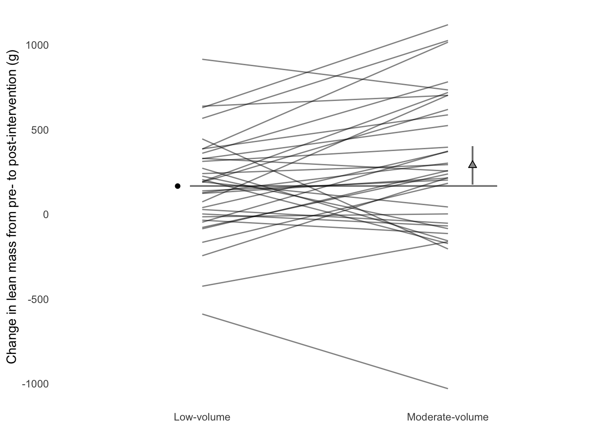
theme_minimal and removing redundant data ink by removing points and adding transparency. Adding group averages with geom_point.The resulting graph shows the change from pre- to post-intervention in each condition per participant by lines. The average at the reference category represents a baseline to which the moderate volume condition is compared. Inference can be made from a 95% confidence interval around the moderate-volume condition.
1.5 Edit and revise in practice
The process of creating graphs is an iterative practice. We try something, edit and revise. When the end result goes into a publication it is a good idea to have a workflow that updates the end result not some intermediate result.
Let us say that we are planning to submit a paper to the American Journal of Physiology. In the author instruction we read that a single column figure should be less or equal to 8.9 cm in width and a maximum 22.8 in height/depth.9 This gives some basics instructions for our plot.
9 See https://journals.physiology.org/manuscript-prep#figures
Graphs could be created from separate R scripts. This makes the workflow smoother as we only need to run a single script to recreate the output after revision. I keep my figures together with the scripts in a dedicated folder in my project folder called figures. Here I number figures and their corresponding scripts as figure1.R, figure1.pdf, figure2.R etc.
On the bottom of the script I have a call to the function ggsave. This function makes it easy to save a ggplot in a number of formats, also formats accepted by journals (such as TIF and PDF).
When I make changes to the script and saves them they are automatically sourced and the output is recreated.
1.6 Additional notes, tips and topics
1.6.1 Labels, annotations and special texts
A package called ggtext makes it possible to write markdown syntax in labels and annotation in ggplots. This improves usability to a large degree as subscripts and superscrits together with special characters are easily added to labels etc.
Sometimes custom fonts are needed. Your basic collection of fonts are not that impressive but packages such as showtext may help in installing additional fonts.
Code producing the figure
library(showtext)
font_add_google(name = "Permanent Marker",
1 family = "permanentmarker")
showtext_auto()
leg_leanmass |>
filter(include != "excl") |>
mutate(time = factor(time,
levels = c("pre", "post"))) |>
ggplot(aes(time, lean_mass, fill = volume)) +
geom_boxplot() +
labs(x = "Time",
y = "Leg lean\nmass (g)",
fill = "Volume condition",
title = "The plot title",
subtitle = "The plot subtitle",
caption = "the plot caption") +
scale_x_discrete(labels = c("Pre\nintervention",
"Post\nintervention")) +
theme(axis.title.x = element_blank(),
legend.position = "top",
plot.title = element_text(color = "black",
2 family = "permanentmarker",
size = 40))- 1
- This “installs” the font on your system.
- 2
- Specifying a font family, use your own specified name to access it.
1.6.2 Glamorous graphics
In a talk at RStudio conference in 2020, Will Chase presented principles related to glamorous graphics. In contrast to Tufte’s principles (discussed above), glamorous graphics suggest adding ink to increase the attractiveness of graphics. (This might be a topic for a later workshop).